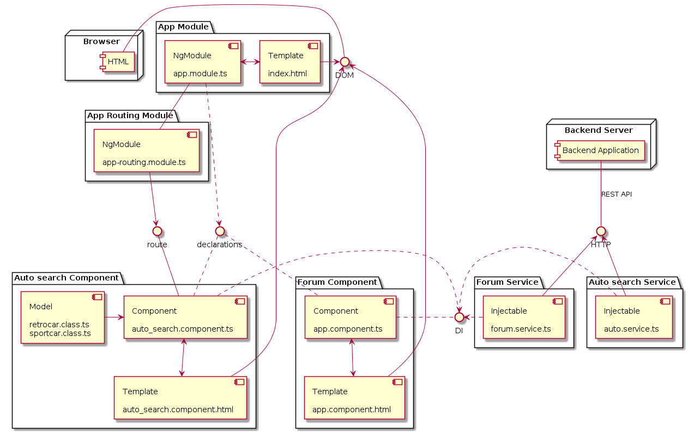

Лабораторная №4
1. Определить набор тестов к выбранной пользовательской истории
2. Определить допустимость дублирования функций
Из-за выбора одноразового прототипирования группового проекта, допускается дублирование функций
3. Определить допустимость "плохого кода"
По той же причине допускается наличие "плохого кода"
4. Определить способ учета технического долга
Причины возможного технического долга
- Нехватка времени
- Недостаток опыта
Сроки устранения
- Окончание учебного семестра
Способы устранения
- Использование свободного времени на обучение, для дельнейшего применения полученых навыков
- Привлечение более квалифицированных специалистов
UML диаграмма компонентов
